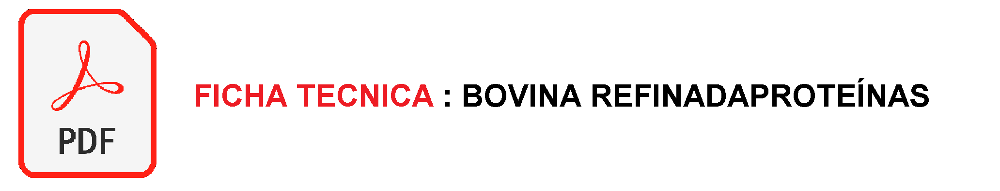
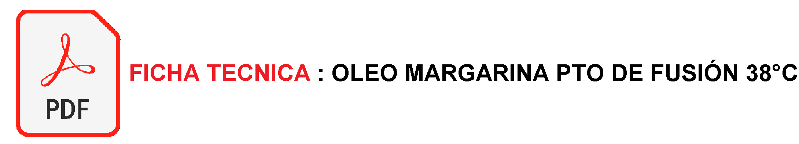
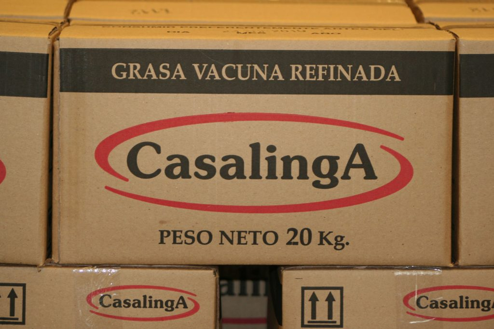

Casalinga cuenta con tres productos:
Grasa Bovina Refinada es uno de los insumos para la industria alimenticia. Es utilizada especialmente para incorporar contenido graso en las preparaciones de panaderos, fabricantes de galletitas, repostería, entre otros. Hecha con un punto de fusión de 44ºC, y a través de un proceso detallado e intenso, es caracterizada por su fácil incorporación en los amasijos, su estabilidad, y también por su buena incorporación a la masa. Es enviado en cajas de 10kg o 20kg

Oleo Margarina Refinada: tiene un punto de fusión de 38°C. Esto hace que su incorporación en los amasigos, e intervención como componente de masa sea más fácil. Es enviado en cajas de 10kg o 20kg.

Estearina: tiene un punto de fusión de 48°C. Es enviado a granel.

1.- Después de pasar por un sistema de purificación, en el cual se eliminan los sólidos, el sebo es enviado al sector de refinería donde se produce el proceso de neutralización.
2.- Luego, el producto se somete al procedimiento de blanqueo y filtrado, cuyo resultado es grasa neutro blanqueada con un punto de fusión de 44ºC. En esta etapa, se realiza la cristalización y filtrado del material para realizar la separación del mismo en dos fases de distintos puntos de fusión. Finalmente, la grasa es desodorizada en presencia de alto vacío y alta temperatura.
3.- El proceso de producción concluye con un control físico-químico, luego del cual el producto, que posee distintas características de acuerdo al destino y utilización que requiera el cliente, está listo para su fraccionamiento.
2023 HDK.SA. Todos los derechos reservados.